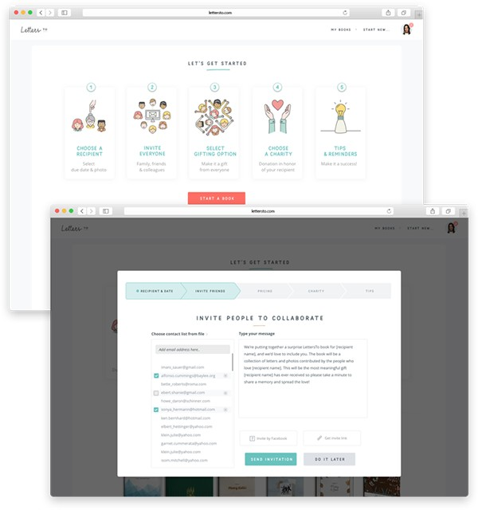
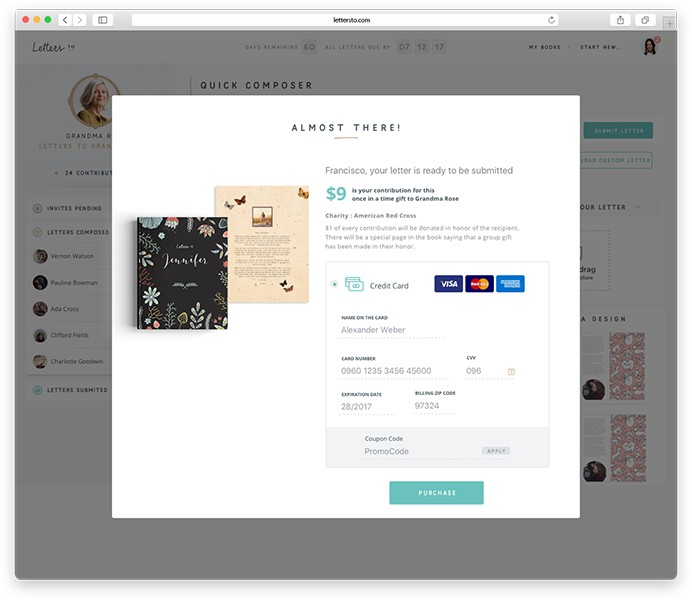
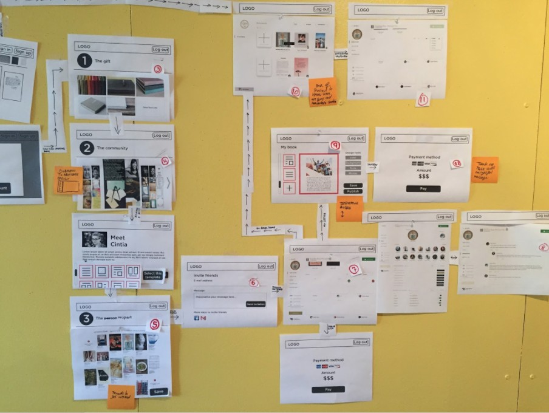
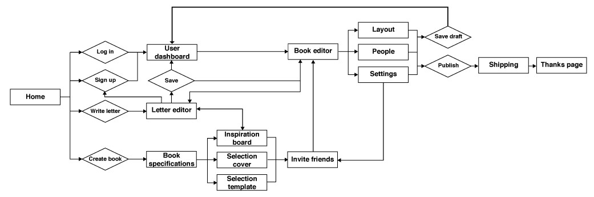

Case study · 0→1 startup
Leading a physical and digital product, and a team, from nothing.
LettersTo was the flagship product of Dreamable, a San Francisco startup: a collaborative book platform where a group writes and designs letters together, and the finished book is professionally printed and shipped. I was hired directly by the CEO and relocated to San Francisco to lead the design of the entire product, digital and physical, from a standing start.
The product
Three roles, one book, and a hard design problem underneath it.
LettersTo let a producer organize a collaborative book for someone, invite collaborators to each write and design a letter or page, and have the finished book professionally printed, bound, and shipped, sewn, with embossing, foil, or gold-lettering finishing options. Each collaborator paid a small amount toward the book, spreading the cost across the group.
The hardest design problem wasn't any single screen, it was that one experience had to work for a huge demographic range in a single flow, from children to seniors, and had to feel like a delightful gift.


The process
Built on a wall, before it was formalized into a system.
This was the earliest chapter of my career, and the most organic. I didn't yet have the formal Design Thinking process I use today, the team figured it out in real time: card sorting to shape the information architecture, persona work and target-audience workshops, and low-fi wireframes worked out collaboratively, live, on an office wall.

From there, I mapped the full user workflow end to end, from first landing on the site through to the shipping and thank-you pages, to make sure the information architecture held together before any high-fidelity design began.

Because the final product was a physical book, part of the research was physical: I traveled to multiple print shops across the US to work out pricing, binding, and finishing options, embossing, foil, debossing, gold lettering, decisions that fed directly back into the digital product's checkout and customization flows.
Visual identity
Delightful, authentic, collaborative, keepsake.
Those four pillars drove a young, warm identity applied minimally: Mila Script for personality, Open Sans to keep everything else legible, and a soft, giftable color palette across the site and the printed books themselves.
Outcome
Shipped to beta, before the funding ran out.
LettersTo shipped and reached beta with real books produced and delivered. Dreamable was self-funded, and its CEO eventually chose not to keep investing further, so the company closed and the product no longer exists today. That's a funding story, not a product or design failure.
The proof point here isn't a growth metric. It's that I was trusted to lead an entire product and a team of up to 8 people, spanning illustrators and UX/UI designers, through a genuinely ambiguous 0-to-1 problem, years before I had a formal process to lean on.